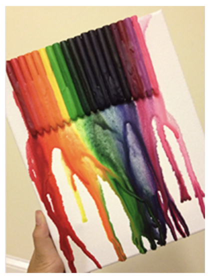

My Google+ Story
Trudy Hoang
Parsons School of Design
tho im pretty sure no one in my circle on Google+ is a mom.....
HAPPY MOTHER'S DAY!!

i decided 2 write down my train of thought nd see how the human mind (well, my mind at least) works
its kindda long, srry
this is wht i got:
"Sometimes I wonder wht it wud feel like if I was never born...
Wud it feel like death? Wud it feel like u were closing ur eyes 4ever?
I wonder how i use 2 think when i was baby.......
Did i think of sumthing nd completly forget after 3 seconds like a fish? or did i just went on auto piliot?
Maybe I was on auto pilot...but i seemed so clueless
ahhh CLue..thts a fun game
Clue Jr was weird tho
They had books about tht game, i never solved any of the mysteries tho
but i was in 3rd grade
ahh my favorite teacher was my 3rd grade teacher, she was nice
sure missed her, specially in 4th grade at the kilmer
i left some friends, well a friend, all my friends left b4 me :(
but yeh i was scared of my 4th grade teacher.....
not the best first impression of the kilmer
well it got better the next year....WHO AM I KIDDING
5th grade teacher was pretty stupid, never learned less stuff in my life
it was like going 2 ccd everyday
but 6th grade was a LOT better
but of course tht had 2 end.......
but now im at bls, so i guess thts gud
i mean it pretty makes the impression tht im smart, tho it takes me 30 min 2 memorize a little line
tht reminds me.....
i have 2 study for the national myth exam
the myth exam....
gud thing its not gonna be on a tuesday tho cuz i have ccd....
well maybe it shud be on tuesday then so maybe i can miss it again
wait no it cant be on tuesday cuz i have my ortho appointment tht tuesday
ugh no
y cant i have ortho on fridays? or mondays?
not thursdays...my mom works late tht day
nd i dont wanna take the bus home
donuts
tht was random"